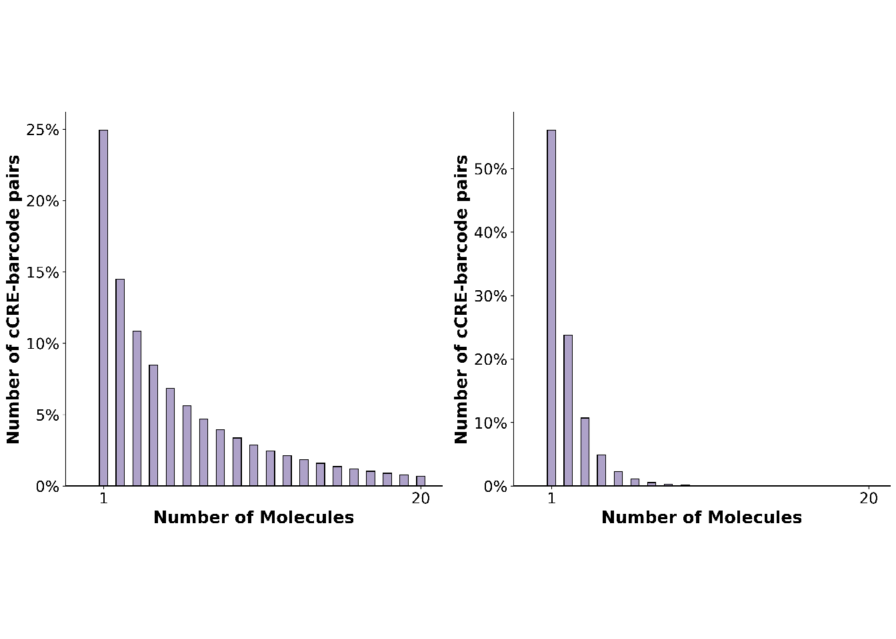
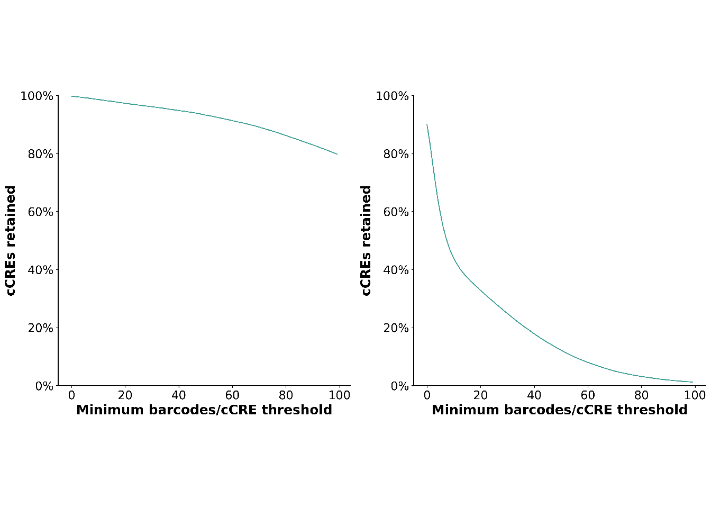
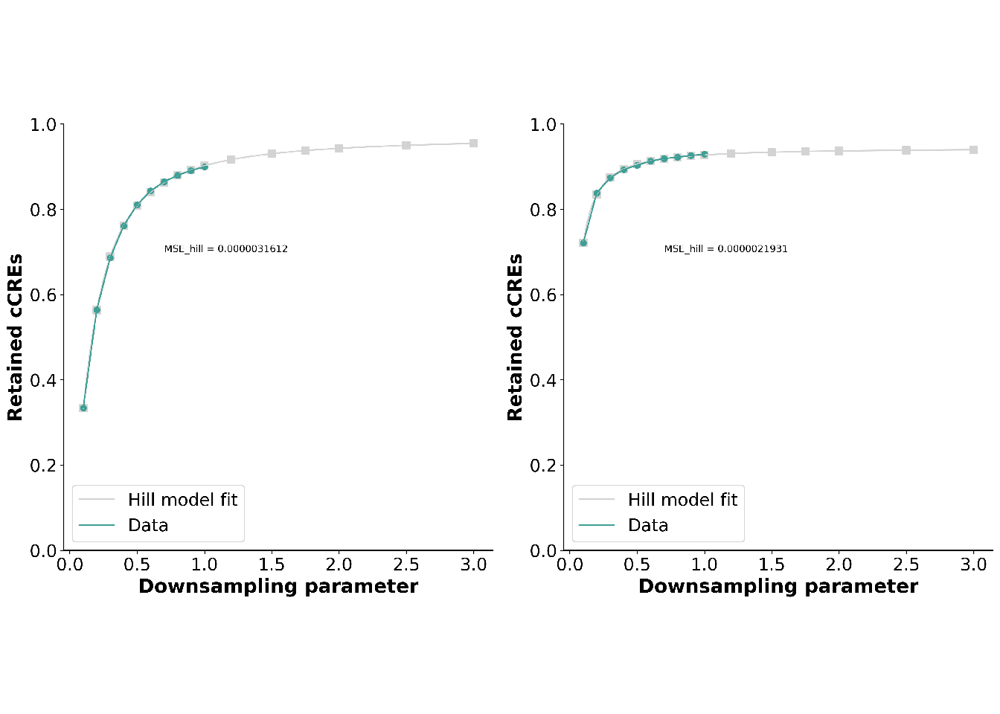

A Minimal Book Example
Overview
Usage
Scripts
1
A guide for running the analyses notebook
1.1
Associations
1.1.1
Input
1.2
Activity
1.2.1
Input
1.3
Differential Activity
1.3.1
Input
2
Associations QC
2.1
Barcodes per cCRE
2.2
PCR bias - GC content
2.3
cCRE-barcode observations
2.4
Retained cCREs
2.5
Barcode promiscuity
2.6
Downsampling - Retained cCREs
2.7
Downsampling - Barcodes per cCRE
Published with bookdown
Quality Control Pipeline for Massively Parallel Reporter Assays (MPRAs)
Chapter 2
Associations QC
2.1
Barcodes per cCRE
This is a placeholder for an explanation on the analysis
2.2
PCR bias - GC content
2.3
cCRE-barcode observations
2.4
Retained cCREs

2.5
Barcode promiscuity

2.6
Downsampling - Retained cCREs
2.7
Downsampling - Barcodes per cCRE
